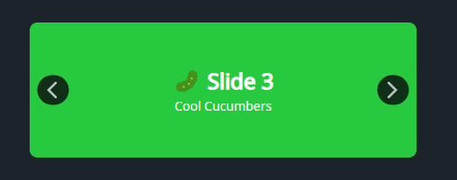

DaisyCarousel is a slide container with built-in previous/next buttons and directional slide transitions. Supports manual navigation, automatic slideshow modes, and cinematic visual effects like Pan And Zoom pan/zoom. Perfect for galleries, hero banners, or featured content.
| Property | Type | Default | Description |
|---|---|---|---|
SelectedIndex |
int |
0 |
Index of the currently displayed item. |
SlideTransition |
FlowerySlideTransition |
None |
Visual transition between slides (e.g. Fade, Cube, Wormhole). |
SlideEffect |
FlowerySlideEffect |
None |
Continuous visual effect applied to the active slide (e.g. PanAndZoom). |
TransitionDuration |
double |
0.4 |
Duration of the transition in seconds. |
SlideInterval |
double |
3.0 |
Seconds between automatic advances in slideshow modes. Min: 0.5s. |
Mode |
FlowerySlideshowMode |
Manual |
Navigation mode (Manual, Slideshow, Random, Kiosk). |
WrapAround |
bool |
false |
When true, navigation wraps around (last→first, first→last). |
Orientation |
Orientation |
Horizontal |
Navigation direction: Horizontal or Vertical. |
ShowNavigation |
bool |
true |
Whether to show prev/next buttons. |
ZoomIntensity |
double |
0.15 |
Default zoom factor for zoom effects (0.0 to 0.5). |
PanDistance |
double |
50 |
Default pan distance in pixels for pan effects (0 to 200). |
PulseIntensity |
double |
0.08 |
Pulse amplitude for the Pulse effect (0.0 to 0.2). |
SwipeThreshold |
double |
50 |
Minimum swipe distance in pixels to trigger navigation. |
ItemCount |
int |
(read-only) | Total number of items in the carousel. |
These properties fine-tune the behavior of specific transitions (Tier 2 and Tier 3).
| Property | Type | Default | Targets |
|---|---|---|---|
TransitionSliceCount |
int |
8 |
Blinds, Slices, Checkerboard, Spiral. |
TransitionStaggerSlices |
bool |
true |
Whether cells reveal sequentially or randomly. |
TransitionSliceStaggerMs |
double |
50 |
Milliseconds between individual cell reveals. |
TransitionPixelateSize |
int |
20 |
Block size for Pixelate (HD vs 8-bit look). |
TransitionDissolveDensity |
double |
0.5 |
Grain density for Dissolve (0.1 to 1.0). |
TransitionFlipAngle |
double |
90 |
Rotation intensity for Flip and Cube (0 to 180). |
TransitionPerspectiveDepth |
double |
1000 |
3D depth for Flip and Cube. |
> Note: The FlowerySlideshowMode and FlowerySlideEffect enums, along with the FlowerySlideshowController class and FlowerySlideEffects attached properties, are documented in FloweryAnimationHelpers.
DaisyCarousel distinguishes between SlideTransitions (the animation when switching between two slides) and SlideEffects (continuous loop animations on the active slide).
FlowerySlideTransition)Transitions are grouped into tiers based on complexity and platform support:
* Tier 1 (Universal): Fade, Slide, Push, Zoom, Flip, Cube, Cover, Reveal. Works on all platforms.
* Tier 2 (Clip-based): Wipe, Blinds, Slices, Checkerboard, Spiral, Matrix Rain, Wormhole.
* Tier 3 (Advanced): Dissolve, Pixelate. ✨ Requires Skia-based targets for full effect.
FlowerySlideEffect)Continuous hardware-accelerated animations inspired by cinematic documentary styles:
* Pan And Zoom: Dramatic pan and zoom that switches direction on every slide.
* Drift: Random-direction slow panning.
* Breath: Subtle keyframe-based "zooming in and out" pulse.
* Throw: High-speed parallax fly-through effect.
* Pulse: Uniform rhythmic scale animation.
| Feature | Description |
|---|---|
| 3D PlaneProjection | Transitions like Flip and Cube utilize true 3D rotations via hardware-accelerated projections. |
| Mask Visual System | Tier 2 transitions use a sophisticated VisualMask tree for per-cell staggered reveals. |
| Auto-Performance | Grid-based transitions (Pixelate, Dissolve) automatically adjust cell density to stay within GPU budgets (~5k elements). |
| Direction-Aware | Animations enter/exit based on whether you clicked "Next" or "Previous". |
| Kiosk Mode | Randomly selects both transitions and effects for every slide, ensuring a dynamic, non-repetitive display. |
| Input Method | Behavior |
|---|---|
| Keyboard | Arrow keys navigate (based on Orientation). Home/End jump to first/last. PageUp/PageDown navigate. |
| Touch/Mouse Swipe | Swipe gestures navigate when exceeding SwipeThreshold. Direction matches Orientation. |
| Focus | The carousel is focusable (Tab-navigable) for keyboard accessibility. |
<!-- Basic carousel with colored slides -->
<controls:DaisyCarousel Width="450" Height="150">
<Border Background="#FF5F56" CornerRadius="8" />
<Border Background="#FFBD2E" CornerRadius="8" />
<Border Background="#27C93F" CornerRadius="8" />
<Border Background="#007BFF" CornerRadius="8" />
</controls:DaisyCarousel>
<!-- Pan And Zoom effect photo gallery -->
<controls:DaisyCarousel Width="520" Height="300"
Mode="Slideshow"
SlideInterval="5"
SlideEffect="PanAndZoom"
ShowNavigation="False">
<StackPanel>
<Border CornerRadius="8">
<Image Source="ms-appx:///Assets/photo1.jpg" Stretch="UniformToFill" />
</Border>
<Border CornerRadius="8">
<Image Source="ms-appx:///Assets/photo2.jpg" Stretch="UniformToFill" />
</Border>
<Border CornerRadius="8">
<Image Source="ms-appx:///Assets/photo3.jpg" Stretch="UniformToFill" />
</Border>
</StackPanel>
</controls:DaisyCarousel>
<!-- Vertical carousel with WrapAround -->
<controls:DaisyCarousel Width="250" Height="400"
Orientation="Vertical"
WrapAround="True">
<StackPanel>
<Border Background="#667eea" CornerRadius="8" />
<Border Background="#f093fb" CornerRadius="8" />
<Border Background="#4facfe" CornerRadius="8" />
</StackPanel>
</controls:DaisyCarousel>
<!-- 3D Cube navigation -->
<controls:DaisyCarousel Width="600" Height="350"
SlideTransition="CubeRight"
TransitionDuration="0.6"
SlideEffect="Throw">
<Image Source="..." Stretch="UniformToFill" />
<Image Source="..." Stretch="UniformToFill" />
</controls:DaisyCarousel>
<!-- Cinematic Matrix Rain transition -->
<controls:DaisyCarousel Width="520" Height="300"
SlideTransition="MatrixRain"
TransitionSliceCount="12"
TransitionSliceStaggerMs="80">
<Border Background="#1a1a1b">
<TextBlock Text="System Active" Foreground="#00ff41" HorizontalAlignment="Center"/>
</Border>
</controls:DaisyCarousel>
<!-- Photo gallery with Spiral reveal -->
<controls:DaisyCarousel Width="520" Height="220"
Mode="Slideshow"
SlideInterval="4"
SlideTransition="Spiral"
TransitionSliceCount="10">
<Image Source="..." Stretch="UniformToFill" />
<Image Source="..." Stretch="UniformToFill" />
</controls:DaisyCarousel>
<!-- Carousel with templated items -->
<controls:DaisyCarousel ItemsSource="{Binding FeaturedCards}"
Width="480"
Height="200">
<controls:DaisyCarousel.ItemTemplate>
<DataTemplate>
<controls:DaisyCard Variant="Compact" BodyPadding="16">
<StackPanel Spacing="6">
<TextBlock Text="{Binding Title}" FontWeight="SemiBold" />
<TextBlock Text="{Binding Subtitle}" Opacity="0.8" />
<controls:DaisyButton Content="View" Variant="Primary" Size="Small" />
</StackPanel>
</controls:DaisyCard>
</DataTemplate>
</controls:DaisyCarousel.ItemTemplate>
</controls:DaisyCarousel>* Set explicit Width/Height so content clips cleanly within the rounded host.
* Use lightweight slide content (images, simple cards) to keep transitions smooth.
* For data-bound scenarios, use ItemsSource + ItemTemplate instead of manually adding children.
* Use Orientation="Vertical" for tall content areas or story-style feeds (top/bottom navigation).
* Use Mode="Slideshow" for hero banners that cycle through content automatically.
* Use Mode="Random" for digital signage or kiosk displays where variety prevents repetition.
* Combine Mode="Slideshow" with ShowNavigation="False" for a cleaner auto-play experience.
* Use SlideEffect="PanAndZoom" for cinematic photo galleries - it randomly selects pan/zoom per slide.
* Use WrapAround="True" for manual photo galleries where users expect to loop continuously.
* The carousel is keyboard-accessible: Tab to focus, arrow keys to navigate.
* The timer and effects automatically stop when the carousel is unloaded to prevent memory leaks.
* Platform note: Slide effects require HAS_UNO or WINDOWS compilation symbols; on other platforms they gracefully fall back to static display.
* FloweryAnimationHelpers - Complete reference for:
* FlowerySlideEffect enum values
* FlowerySlideshowMode enum values
* FlowerySlideshowController for building custom slideshows
* FlowerySlideEffects attached properties for standalone animations